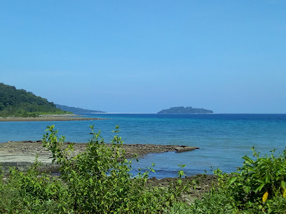

CITIES AND PLACES
Port Blair
- Cellular Jail: A historic colonial prison, now a national memorial, where freedom fighters were incarcerated during British rule.
- Ross Island: A small island that was once the administrative headquarters of the British, now a tourist spot with ruins and wildlife.
- Corbyn's Cove Beach: A popular beach located close to Port Blair, offering water sports and a beautiful sunset view.

- Mahatma Gandhi Marine National Park: A protected area of coral reefs, offering snorkeling, diving, and boat rides to nearby islands.
- Samudrika Naval Marine Museum: A museum displaying marine life, tribal culture, and the history of the Andaman and Nicobar Islands.
- Chidiya Tapu: A picturesque beach known for its birdwatching opportunities and stunning sunset views.
Havelock Island
- Radhanagar Beach: One of the most beautiful beaches in Asia, known for its crystal-clear water and soft white sand.
- Elephant Beach: Famous for water sports like snorkeling and scuba diving, offering a vibrant underwater experience.
- Kalapathar Beach: A serene beach with black rocks and clear blue waters, ideal for a peaceful retreat.

- Vijaynagar Beach: A peaceful beach with shallow waters, perfect for swimming and relaxing by the shore.
- Neil’s Cove: A secluded cove known for its natural beauty, excellent for snorkeling and swimming.
- Scuba Diving Sites: Havelock Island offers multiple dive sites, making it a diver’s paradise with rich marine life.
Neil Island
- Bharatpur Beach: A stunning white sandy beach known for its shallow waters, perfect for swimming and snorkeling.
- Laxmanpur Beach: A tranquil beach offering mesmerizing sunset views, ideal for a peaceful retreat.
- Natural Bridge: A natural rock formation also known as "Howrah Bridge," a popular spot for photography.

- Sitapur Beach: Known for its scenic sunrise views, this beach is perfect for early risers and photographers.
- Ram Nagar Beach: A serene and less crowded beach, offering great opportunities for snorkeling and beachcombing.
- Neil Island Jetty: A busy spot connecting the island to other places, offering beautiful views of the sea and boats.
Diglipur
- Saddle Peak National Park: The highest point in the Andaman Islands, offering trekking routes and stunning views of the surrounding landscape.
- Ross & Smith Islands: A pair of islands connected by a sandbar, known for their pristine beaches and clear waters, ideal for snorkeling.
- Lamiya Bay Beach: A secluded beach with clear waters and scenic surroundings, perfect for relaxation and nature walks.

- Kalpong River: The only river in the Andaman Islands, offering a serene atmosphere and a great spot for picnics.
- Pathi Level Beach: A remote and less crowded beach, known for its natural beauty and peaceful ambiance.
- Ram Nagar Beach: Another secluded beach ideal for turtle nesting and peaceful nature experiences.
Baratang
- Limestone Caves: A natural wonder formed over thousands of years, accessible by boat through dense mangroves.
- Mud Volcano: India's only active mud volcano, offering a unique geological experience.
- Parrot Island: A small, uninhabited island famous for the thousands of parrots that flock here at sunset.

- Baludera Beach: A serene, less crowded beach perfect for relaxing and enjoying nature.
- Boat Ride Through Mangroves: Explore the dense mangrove forests while riding through creeks leading to the Limestone Caves.
- Jarwa Reserve: The area around Baratang is home to the indigenous Jarwa tribe, although access to their reserve is restricted.
Other Attractions
Limestone Caves
- Limestone Caves: Located in Baratang Island, these natural caves are formed by the mineral deposits of limestone over time, creating stunning formations. Accessible by boat, the journey to the caves offers scenic views and a thrilling experience.

- Other Attractions: The journey to the Limestone Caves takes you through the dense mangrove forests of Baratang Island, and visitors can spot various wildlife species along the way. It's a must-visit destination for adventure and nature lovers.
Mud Volcanoes
- Mud Volcanoes: A natural phenomenon unique to the Andaman and Nicobar Islands, where mud and gases bubble up from the earth’s surface, creating small volcanic mounds.

- Interesting Fact: These mud volcanoes are active but harmless, making them a popular yet safe attraction for tourists interested in geological phenomena.
Mount Harriet National Park
- Location: Situated in the Andaman and Nicobar Islands, Mount Harriet is the highest peak in the South Andaman region.
- Flora and Fauna: The park is known for its dense forests, home to a wide variety of plants, animals, and endemic species, including birds and butterflies.
- Trekking: Mount Harriet offers scenic trekking trails that lead to beautiful viewpoints, giving visitors panoramic views of the surrounding islands and the sea.

- Other Attractions: The park is also famous for being depicted on the reverse side of the ₹20 note. Its rich biodiversity and serene environment make it a popular spot for nature lovers.
- Camping: The national park provides opportunities for eco-friendly camping, offering an immersive experience with nature.
- Bird Watching: A haven for birdwatchers, Mount Harriet is home to many unique bird species, making it a great spot for birding activities.
Ross Island
- Historical Significance: Once the administrative headquarters for the British in the Andaman Islands, it features remnants of colonial buildings.
- Natural Beauty: Surrounded by lush greenery and beautiful beaches, it's a great spot for nature lovers.
- Wildlife: Home to various species of birds and a number of deer that roam freely around the island.

- Light House: The historic lighthouse provides stunning views of the surrounding ocean and islands.
- Coral Reefs: Great for snorkeling and exploring the vibrant underwater life surrounding the island.
- Beach Activities: Offers opportunities for relaxation, picnicking, and enjoying the serene environment.
Festivals & Events
Butler Bay Beach
- Location: Situated on the western coast of Little Andaman Island, known for its scenic beauty and tranquility.
- Activities: Offers opportunities for swimming, sunbathing, and enjoying water sports like surfing and kayaking.
- Wildlife: The area is home to diverse flora and fauna, making it a great spot for nature lovers.
- Sunset Views: Known for stunning sunset views, making it a perfect spot for photography and relaxation.
- Festivals: Local festivals are celebrated here, showcasing the rich culture of the Andaman and Nicobar Islands.
- Accessibility: Accessible via boat from nearby islands, providing a serene getaway for visitors.
Cultural Performances
- Tribal Dance Performances: Experience the vibrant tribal dances performed by indigenous communities, showcasing their rich cultural heritage.
- Island Music Festivals: Attend local music festivals featuring traditional music and performances by local artists.
- Sea Food Festivals: Enjoy various seafood dishes and witness cooking competitions that highlight the culinary culture of the islands.

- Festivals of Lights: Celebrations during Diwali and other festivals featuring traditional music, dance, and fireworks.
- International Yoga Festival: Participate in yoga sessions and workshops held annually, attracting practitioners from around the world.
- Local Art Exhibitions: Visit art exhibitions showcasing the work of local artists inspired by the islands’ natural beauty and culture.
Food Stalls and Culinary Experiences
- Aberdeen Bazaar: A vibrant market offering a variety of local delicacies, seafood, and snacks.
- Port Blair Food Stalls: Street vendors serving fresh fish, coconut water, and local favorites like fish curry and rice.
- Neil Island's Local Eateries: Small eateries offering fresh seafood and traditional dishes made from locally sourced ingredients.
- Little Andaman Food Shacks: Beachside shacks serving fresh seafood and tropical drinks, perfect for a relaxing meal.
- Havelock Island's Seafood Dishes: Renowned for its fresh catch, try local specialties at beachfront restaurants.
- Local Festivals: Enjoy food stalls during festivals, offering a mix of local and traditional dishes from different cultures.
Adventure & Nature
Car Nicobar
- Nicobar Islands Wildlife Sanctuary: A protected area rich in biodiversity, ideal for birdwatching and experiencing unique flora and fauna.
- Malacca Beach: A serene beach known for its pristine sands and clear waters, perfect for swimming and relaxing.
- Mount Thullier: The highest point in Nicobar, offering trekking opportunities and stunning panoramic views.
- Car Nicobar Lighthouse: A historic lighthouse offering beautiful views of the surrounding sea and coastlines.
- Water Sports: Opportunities for scuba diving, snorkeling, and kayaking in the vibrant waters around the island.
- Sunset Point: A picturesque spot perfect for watching breathtaking sunsets over the ocean.
Great Nicobar
- Campbell Bay National Park: A beautiful national park known for its rich biodiversity and hiking trails through dense forests.
- Great Nicobar Biosphere Reserve: A UNESCO designated reserve featuring unique flora and fauna, ideal for nature enthusiasts.
- Little Nicobar Island: An unspoiled paradise for adventure seekers, offering opportunities for trekking, bird watching, and camping.
- Shompens Tribe Experience: Engage with the indigenous Shompens tribe to learn about their unique culture and lifestyle.
- Nicobar Island Beaches: Explore pristine beaches like Nancowry and Car Nicobar, perfect for swimming and relaxation.
- Trekking Opportunities: Various trekking routes offer thrilling experiences through lush landscapes and scenic vistas.